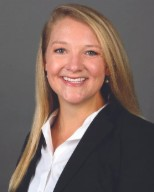
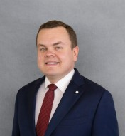
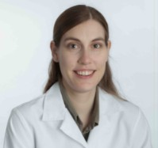

Board Members
The following members comprise the board for the Society of Veteran Disability Examiner PAs. Board members are disability examiner practicing PAs.

Chelsea Raby, PA-C
Chelsea Raby is a disability examiner PA, co-founder and board member of SOVDEPA. She graduated from the University of Alabama at Birmingham Physician Assistant Program and has worked clinically in Emergency Medicine, Neurosurgery, and Urgent Care. As the spouse of a combat Veteran, she understands the importance of providing exceptional care to our service members and Veterans, while also advocating for PAs to pursue a career in this exciting, rapidly expanding field.

Brandon Beattie, PA-C
Brandon Beattie is a disability examiner PA, co-founder and board member of SOVDEPA. He is also an assistant professor and the Director of Didactic Education, where he oversees the didactic phase of training at the George Washington University PA Program. He graduated from the Yale University Physician Assistant Program with honors and has worked clinically in Neurology, Urgent Care, and outpatient Interventional Radiology. Before becoming a PA, he served honorably as a decorated U.S. Army Medic with multiple overseas tours.

Kristen Scheckel, PA-C
Kristen Scheckel is a disability examiner PA, co-founder and board member of SOVDEPA. Prior to entering this field, Kristen worked in Internal Medicine and Endocrinology for 13 years. She loves the variety and challenge involved in conducting Veteran disability exams. She is passionate about providing high quality care to Veterans receiving disability medical examinations and strives to help PAs interested in this unique field.